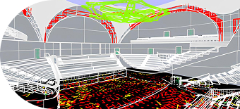
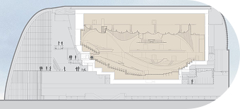
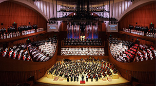
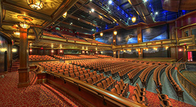
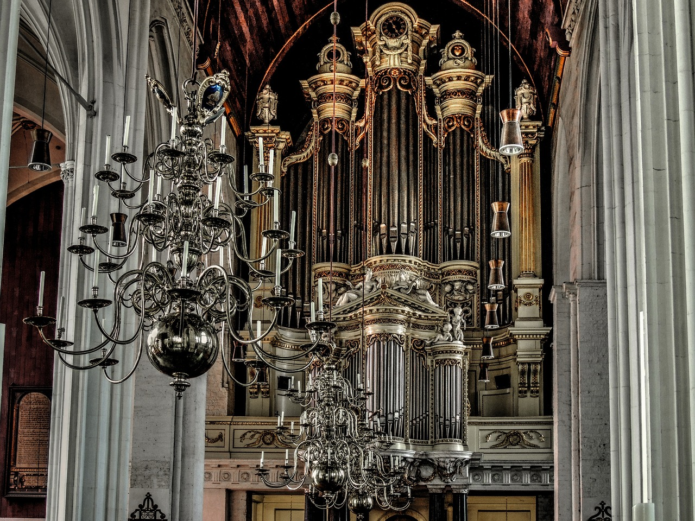
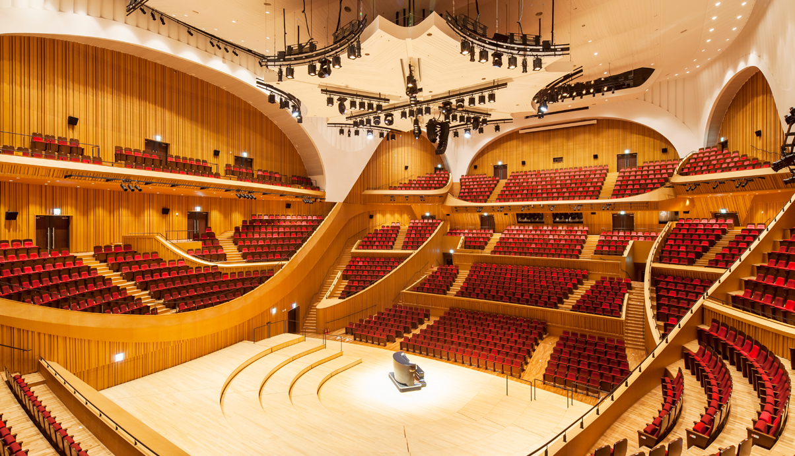
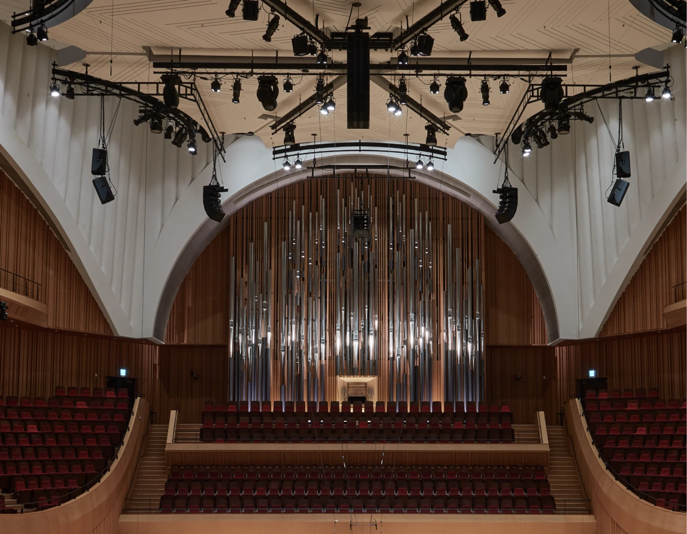

공연장 소개
-

-
새로운 감동을 전하는 압도적인 음향
‘Nagata Acoustics’ - 롯데콘서트홀은 일본의 대표 클래식 공연장인 ‘산토리홀’과 미국의 ‘월트디즈니 콘서트홀’,
프랑스의 ‘필하모니 드 파리’ 등 세계적으로 호평 받는 공연장의 음향설계를 총괄한 ‘나가타 어쿠스틱스’가 맡아
세계적 수준의 음향을 구현해 내었습니다.
최상의 음향을 위해 건축설계는 물론 무대마루의 구조, 조명 및 영상 장비의 소음 차단, 흡음률을 고려한 객석의자 제작 등 시설 부분까지도 세심하게 설계하였으며, 특히 나가타社의 핵심 컨설턴트인 ‘야스히사 토요타’가 1/10 스케일 모델 테스트부터 최종 테스트까지 설계 및 시공의 전 과정에 참여하여 최상의 음향을 완성하였습니다. 세계적인 음향의 장인들이 빚어낸 소리의 감동을 롯데콘서트홀에서 느껴 보시기 바랍니다.
-
새로운 감동을 전하는 압도적인 음향
-

- 더욱 풍부한 음향을 위한 건축기술
‘BOX-in-BOX’ -
보다 섬세하고 풍부한 음향을 위한 롯데콘서트홀의 노력은 건축기술에도 적용되었습니다.
공연 감상에 있어 최상의 환경을 제공하고자 국내 공연장 최초로 콘서트홀의 내부 구조(바닥, 벽, 천장)를
외부 구조로부터 완전히 분리한 BOX-in-BOX 구조를 도입하였습니다.
공간 안에 다른 공간을 넣는 BOX-in-BOX 구조는 외부 공간을 이중으로 감싸면서 소음과 진동을 완벽히 차단하여 관객의 공연 몰입도를 높여줍니다. 섬세하게 설계된 명품 콘서트홀에서 탁월한 음향의 즐거움을 만끽하시기 바랍니다.
- 더욱 풍부한 음향을 위한 건축기술

- 완벽한 소리를 전달하는
‘빈야드 구조의 객석’ - ‘베를린 필하모닉홀’, 프랑스 ‘필하모니 드 파리’, 일본 ‘산토리홀’ 등 세계 유수 콘서트홀의 ‘빈야드(포도밭, 부채꼴 형태)’ 스타일의 객석은 아름다운 디자인과 뛰어난 음향을 자랑합니다.
- 롯데콘서트홀 역시 세계적 트렌드인 ‘빈야드’ 구조의 객석을 설계하여 무대와 객석의 교감을 높이고 공연 감상의 만족도를 높여 드리고자 합니다.
- 어떤 자리에서도 뛰어난 음향을 경험할 수 있는 ‘빈야드’ 구조는 국내 최초로 선보이는 롯데콘서트홀만의 자랑입니다.

- 공연의 몰입도를 배려한
‘음악전용 콘서트홀’ - 롯데콘서트홀은 서울에 두 번째로 건립되는 대규모 음악전용 콘서트홀 입니다.
- 무대에서 객석으로 멜로디가 퍼지는 느낌을 본떠 붉은 색 계열의 그라데이션으로 디자인한 2,036석의 세련된 객석은 공연을 즐기는 관객으로 하여금 음악의 일부가 되는 특별한 감동을 느끼게 해 드릴 것입니다.
- 공연장이 관객으로 가득 차게 되면 부드러운 소리의 울림이 줄어드는 현상 또한 객석의 소재와 배치, 설치 등을 통해 보완하였습니다. 작은 소리의 차이가 큰 감동의 차이를 만든다는 것을 알기에 롯데콘서트홀은 디테일 하나까지 세밀하게 설계했습니다.
- 세련되고 편안한 공간에서 잊지 못할 음악의 감동을 가슴 깊이 느껴보시기 바랍니다.
-

- 국내 콘서트홀 최초로 파이프 오르간 설치
‘68스탑, 5,000여 개의 파이프’ - 오케스트라 선율을 표현하여 '악기의 제왕'이라 불리는 파이프 오르간은 손꼽히는 클래식홀에서만 만날 수 있는 악기입니다.
- 국내 최초로 '파이프 오르간'이 설치된 클래식 전용홀인 롯데콘서트홀의 파이프 오르간은 오스트리아의 '빈 뮤직페라인 홀'의 파이프를 제작한 'Rieger'(리거)社에서 제작한 것으로 개발부터 설치까지 3년 이상이 소요된 하나의 '작품'입니다.
- 5,000여 개의 파이프를 통해 68가지(68스탑)의 소리를 구현하는 롯데콘서트홀의 파이프 오르간이 선사하는 아름다운 조형미와 신비롭고 다채로운 소리의 향연을 느껴 보시기 바랍니다.
- 국내 콘서트홀 최초로 파이프 오르간 설치
-

- 다양한 규모의 공연을 넘나드는
‘라운드형 무대 리프트’ - 롯데콘서트홀은 국내 최초로 ‘라운드형 무대 리프트’를 설치하였습니다.
- 자유자재로 높이를 조절할 수 있는 ‘무대 리프트’는 연주자들의 편의성을 높여줄 뿐만 아니라 독주회, 실내악 등 소규모 공연부터 오케스트라, 합창과 같은 대규모 공연까지 다양한 형태의 클래식 공연을 진행할 수 있어 매우 효율적입니다.
- 롯데콘서트홀의 무대 리프트는 보다 풍성하고 다채로운 클래식 공연을 선보이기 위한 최상의 설비입니다.
- 다양한 규모의 공연을 넘나드는
-

- 공연의 완성도를 높이는 수준 높은 공연 장비
‘어쿠스틱 배너,
360도 시야각 맞춘 조명’ - 교향곡, 합창곡, 오케스트라 등 어떤 음악을 연주하느냐에 따라 선호하는 ‘잔향’의 길이는 각각 다르고 이는 공연의 완성도에도 영향을 미칠 수 있습니다. 롯데콘서트홀은 섬세한 잔향까지 조절 가능한 ‘어쿠스틱 배너’를 설치하여 공연 특성에 따른 최적의 음향 환경을 조성하였습니다.
- 롯데콘서트홀은 무대가 객석으로 둘러싸인 형태이기 때문에 조명 역시 이에 맞게 구성하였습니다.
- 2,700K의 색 온도를 가진 친환경 LED 객석등과 함께 공연장 천장의 음향반사판 내외부를 비롯한 객석 곳곳에 조명을 설치하여 공간의 매력을 최대한 살리고자 하였습니다.
- ‘편안한 시야’를 선사하는 품격 있는 조명은 클래식 공연의 완성도를 한 단계 끌어올릴 것입니다.
- 공연의 완성도를 높이는 수준 높은 공연 장비